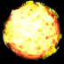
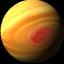
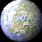
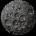
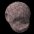

Click on the thumbnails to display the screen shots. Click on the left menu to come back to this page.
This is the configuration windows. See how many parameters you can play with. Don't worry, there is a "Default parameters" button:
Standard pictures, a young star system was generated with several asteroids, comets and planets orbiting a star:
This sampe shows realtime numerical information about the simulation:
Go to the skin file section to see how Gravitation's look can be customized without changing the gravity equation.
Sample objects actually used by Gravitation. Animations are transposed to GIF animated images for browser convenience. They may be less smooth than the actual animation, depending on your browser. I'll soon put more animation from Gravitation on this page:
| A star |  | ||
| A giant planet |  | ||
| An earth like planet |  | ||
| A moon |  | ||
| An asteroid |  | ||